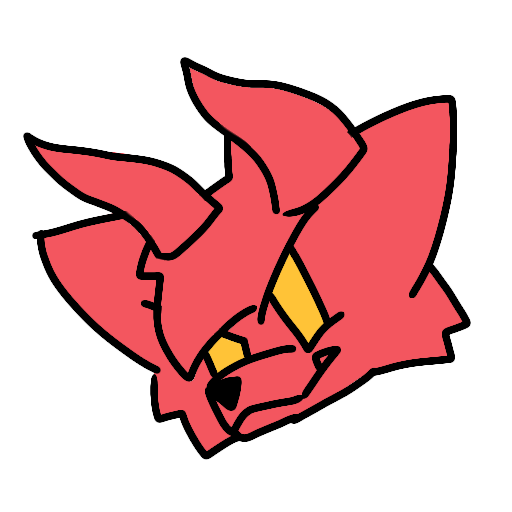

Shinrai Ryūzaki (Alias)
Developer and creator
¡Hola! Bienvenido a mi rincón web. Me dedico a crear proyectos geniales, interfaces dinámicas y arte digital. Explora mis redes o contáctame si quieres colaborar.

Developer and creator
¡Hola! Bienvenido a mi rincón web. Me dedico a crear proyectos geniales, interfaces dinámicas y arte digital. Explora mis redes o contáctame si quieres colaborar.